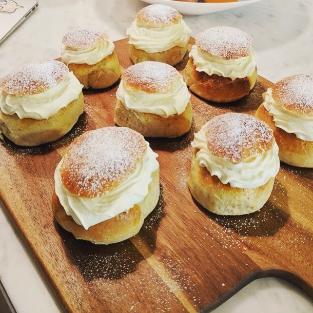

Semlor
18 semlor
- 1 msk kardemummakärnor
- 3 dl mjölk
- 50 färsk jäst
- 1 1/2 dl strösocker
- 1/2 tsk salt
- 150 g mjukt smör
- 1 ekologiskt ägg
- 11-12 dl vetemjöl special
Fyllning
- 400 g mandelmassa
- 1 skvätt mjölk
- 8 dl vispgrädde
- Ägg till pensling
- Florsocker
Hemgjord mandelmassa, 1/2 kg
- 250 g sötmandel
- 2 1/2 dl strösocker
Gör så här:
Stör kardemummakärnorna fint i en mortel och värm med mjölken tills den är fingerljummen, 37 grader.
Smula ner jästen i en bunke och lös den med mjölken, strösocker, salt, smör och ägg.
Tillsätt lite vetemjöl i taget och arbeta samman till en smidig deg.
Jäs degen i en bunke under bakduk till dubbel storlek i 45-60 minuter.
Stjälp upp degen på ett mjölat bord och baka ut till önskade bullar.
Hemgjord mandelmassa
Skålla och skala mandeln.
Mixa mandlarna till ett fint pulver i hushållsmixer.
Tillsätt strösocker och mixa i 5–7 minuter tills det blir en slät och varm massa.
Semlor
Dela degen i 18 bitar och forma dem till runda bullar.
Lägg bullarna på plåtar med bakplåtspapper med skarven nedår.
Sätt ugnen på 200 grader.
Jäs under bakduk i 45-60 minuter.
Pensla bullarna med uppvispat ägg och grädda dem i mitten av ugnen i 6-7 minuter. Låt svalna.
Skär av topparna på bullarna och gröp ur innanmätet.
Rör innanmätet krämigt med riven mandelmassa och en skvätt mjölk.
Fyll semlorna med mandelmassa, spritsa över grädde och lägg på locket. Pudra med florsocker.